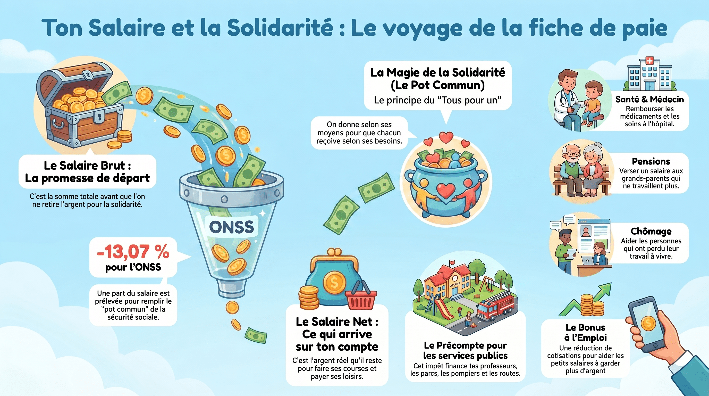

00 Bienvenue dans votre enquête économique et sociale
L'économie n'est pas seulement une question de chiffres et de banques. C'est l'étude de la manière dont les humains s'organisent pour répondre à leurs besoins, travailler ensemble et partager les ressources de notre planète.
- Distinguer un besoin fondamental d'une simple envie.
- Décoder la structure d'une entreprise et sa création de richesse.
- Identifier les différentes formes de travail et leurs droits.
- Expliquer d'où provient l'argent public et comment il est utilisé.
- Évaluer l'impact social et environnemental d'un bien de consommation.
- Le fonctionnement du marché et la rencontre de l'offre et de la demande.
- Le circuit économique reliant les ménages, les entreprises et l'État.
- La différence entre le salaire brut, les cotisations et le salaire net.
- Le principe de la citoyenneté fiscale et du financement collectif.
- Les principes fondamentaux de l'économie circulaire.
Conseil d'organisation : Les activités se déroulent par îlots de 3 à 4 élèves. Ce carnet d'accueil peut être imprimé pour introduire le dossier d'éveil.
Règle d'or des discussions économiques et sociales
Au cours de ce module, nous allons aborder des sujets comme l'argent, les choix de consommation et les conditions de vie. Chaque famille a une situation et des réalités différentes. Il est interdit d'émettre des jugements de valeur ou des moqueries. Toutes les discussions se font avec le plus grand respect et une écoute attentive.
01 La fabrique des besoins et des envies
Avant de produire ou d'acheter, tout commence par une question humaine : de quoi avons-nous réellement besoin pour vivre ?
- Besoin essentiel
- Une nécessité fondamentale pour survivre et vivre dignement dans notre société (se nourrir, se loger, se soigner, s'éduquer).
- Envie
- Un désir d'obtenir quelque chose de non essentiel qui apporte du confort ou du plaisir, mais dont on peut se passer sans danger pour sa vie.
- Bien
- Un objet physique, matériel, que l'on peut toucher et conserver (ex: un vêtement, un pain, un ordinateur).
- Service
- Une prestation immatérielle, une action fournie par quelqu'un sans création d'un objet physique (ex: un transport en bus, une coupe de cheveux, un cours d'école).
- Consommateur
- Un acteur économique qui utilise des biens et des services pour satisfaire ses besoins ou ses envies.
Atelier en ligne — Le tri des besoins et des envies
Observez chaque dessin ci-dessous et déterminez s'il s'agit d'un besoin essentiel ou d'une envie de consommation.
En groupe-classe — Le catalogue décrypté
À partir de publicités découpées dans des magazines ou trouvées en ligne, nous analysons les techniques utilisées par les marques :
- Comment l'image et le texte tentent-ils de nous faire croire qu'une envie (un objet de luxe, un jeu) est un besoin essentiel ?
- Quelles promesses sont associées à l'objet (bonheur, amitié, force) ?
- Pourquoi les entreprises cherchent-elles à influencer nos choix de cette manière ?
Défi en îlot — Notre boîte à besoins
Chaque groupe reçoit 15 cartes d'objets variés. Les élèves doivent se mettre d'accord pour les classer dans deux boîtes : les besoins indispensables et les envies. Les élèves débattent ensuite des cas limites (comme le téléphone portable ou la voiture) en argumentant leur point de vue.
02 Dans les coulisses de l'entreprise
Pour répondre aux besoins et aux envies des consommateurs, les entreprises produisent des biens et des services en organisant la production.
- Entreprise
- Une organisation qui produit des biens ou des services pour les vendre sur un marché afin de réaliser un profit.
- Facteurs de production
- Les éléments combinés pour fabriquer un produit : le travail (la main d'œuvre), le capital technique (les machines, outils, bâtiments) et les matières premières.
- Profit (bénéfice)
- La différence positive entre les recettes d'une entreprise (ce qu'elle gagne en vendant ses produits) et ses dépenses (les salaires, les matières, les impôts).
- Le Marché
- Le lieu de rencontre entre l'offre (les entreprises qui vendent) et la demande (les ménages qui veulent acheter). C'est cette rencontre qui fixe le prix du produit.
- Valeur ajoutée
- La valeur supplémentaire apportée à une matière première à chaque étape de sa transformation grâce au travail et aux machines.
Atelier en ligne — Les facteurs de production
Pour construire une table en bois solide, un menuisier combine différents facteurs. Reliez chaque élément à sa catégorie de facteur de production correspondante.
Ressources nécessaires
Facteurs de production
En groupe-classe — La vie d'un objet (Le T-shirt en coton)
Nous analysons des documents retraçant les étapes de fabrication d'un T-shirt vendu 15 € en Belgique :
- Récolte du coton brut dans un champ en Ouzbékistan (Matière première).
- Filature et tissage dans des usines géantes au Bangladesh (Travail et Capital).
- Transport maritime mondial dans des porte-conteneurs (Services logistiques).
- Vente finale dans une boutique de centre-ville.
Nous discutons de la valeur ajoutée à chaque étape et de la répartition finale de ces 15 € (quelle part revient au cultivateur de coton, aux ouvriers textiles, à la marque de vêtements et à l'État ?).
Défi en îlot — Monter sa mini-entreprise de cookies
Par groupes de 4, les élèves simulent la création d'une mini-boulangerie artisanale. Ils doivent lister leurs besoins (farine, pépites de chocolat, four, électricité, heures de préparation), calculer le coût de revient d'un cookie et fixer son prix de vente pour couvrir les frais et faire un petit bénéfice. Ils débattent ensuite : comment répartir ce bénéfice de manière juste ?
03 Le travail et ses formes de reconnaissance
Le travail est une activité humaine essentielle qui produit de la valeur et permet de structurer nos rapports sociaux.
- Travail salarié
- Activité rémunérée effectuée pour un employeur. Le lien est défini par un contrat de travail fixant les droits et les devoirs de chacun.
- Travail indépendant
- Activité exercée par une personne pour son propre compte (artisan, médecin libéral, avocat, commerçant). Il n'a pas de patron.
- Bénévolat
- Travail volontaire et gratuit pour le compte d'une association ou d'une cause sociale, sans contrat de travail ni rémunération.
- Travail domestique
- Toutes les tâches accomplies au sein du ménage pour la vie quotidienne (ménage, vaisselle, soins aux enfants). C'est un travail invisible et non payé.
- Cotisations sociales
- Sommes d'argent prélevées sur le salaire pour financer la sécurité sociale (maladie, retraite, allocations familiales, chômage).
Écoutez cette discussion explicative entre deux personnes concernant la différence de salaire sur une fiche de paie.
Maxime et Julie décryptent la sécurité sociale
Fichier source : audio/discussion_securite_sociale.mp3 • Durée estimée : 2 min
Transcription de l'explication
Maxime (élève) : Julie, j'ai regardé la fiche de paie de mon grand frère. Son salaire brut est de 2 500 euros, mais sur son compte en banque, il n'a reçu que 1 900 euros de salaire net. Où sont passés les 600 euros de différence ? C'est une erreur ?
Julie (conseillère) : Non Maxime, ce n'est pas du tout une erreur. Ces 600 euros correspondent aux cotisations sociales. C'est de l'argent prélevé pour remplir une cagnotte collective : la sécurité sociale.
Maxime : Mais pourquoi doit-il donner son argent à une cagnotte collective s'il a travaillé pour le gagner ?
Julie : C'est le principe de la solidarité nationale. Cet argent sert à protéger tout le monde contre les risques de la vie. Par exemple, si ton frère tombe malade, ses visites chez le médecin et ses médicaments seront remboursés en grande partie grâce à cette cagnotte. C'est aussi cette cagnotte qui paie les pensions des personnes âgées à la retraite ou qui aide les parents à élever leurs enfants avec les allocations familiales.
Maxime : Ah ! Donc le salaire brut correspond à la valeur totale de son travail, mais le salaire net est ce qu'il peut dépenser après avoir payé sa part de solidarité pour la société.
Julie : Exactement ! C'est grâce à cela que notre système garantit que chacun puisse se soigner, même s'il a de petits revenus.
Atelier en ligne — La fiche de paie mystère
Cliquez sur les repères bleus pour décrypter les éléments principaux de la fiche de paie simplifiée d'un travailleur salarié.
Boulangerie Bel-Cookie SA
Fiche de paie simplifiée • Personnel Salarié
| Intitulé de la ligne | Montant (€) | Description rapide |
|---|---|---|
| Salaire Brut de base | 2 500,00 |
1
|
| Cotisations Sociales (Solidarité) | - 600,00 |
2
|
| Salaire Net (versé en banque) | 1 900,00 |
3
|
En groupe-classe — Déconstruire les stéréotypes sur les métiers
L'enseignant affiche des fiches métiers sans mention de genre (Chirurgien, Infirmier, Éboueur, Assistant maternel, Dirigeant d'entreprise, Ingénieur informatique).
- À quoi ressemblent les professionnels que vous imaginez pour ces métiers ? Hommes ou femmes ?
- Existe-t-il des métiers réservés à un genre en fonction de la force physique ou de la sensibilité ?
- Quelles sont les inégalités de salaire constatées aujourd'hui en Belgique entre les hommes et les femmes pour un travail égal ? Comment les expliquer et les combattre ?
Défi en îlot — Qui fait quoi ?
Chaque groupe reçoit des cartes décrivant une situation de travail (ex: un pompier professionnel, un bénévole de la Croix-Rouge, un parent au foyer qui prépare le repas, un agriculteur qui vend ses pommes de terre). Les élèves doivent classer ces cartes selon le type de travail (salarié, indépendant, bénévole ou domestique) et identifier la forme de rémunération (salaire, bénéfice, honoraires ou reconnaissance non monétaire).
04 Le voyage de la fiche de paie
Découvrez en image comment la solidarité s'organise à partir du salaire brut de départ pour financer les soins de santé, les pensions et le chômage.

Atelier en ligne — Comprendre le voyage de la fiche de paie
Répondez aux questions suivantes à l'aide de l'infographie ci-dessus.
1. Quel est le pourcentage prélevé sur le salaire brut pour l'ONSS selon l'infographie ?
2. Qu'est-ce que « le précompte » mentionné au bas de l'infographie ?
3. Quel principe résumé dans l'image illustre le fonctionnement de la sécurité sociale (le pot commun) ?
05 L'État et la citoyenneté fiscale
L'État et les communes sont des acteurs économiques essentiels. Ils gèrent les services collectifs et assurent la solidarité nationale.
- État
- L'organisation publique qui gère les règles, la justice, la sécurité et le bien-être des habitants d'un pays ou d'une région.
- Impôt
- Une somme d'art prélévée obligatoirement sur les revenus des personnes et des entreprises pour financer les services publics.
- Service public
- Une activité d'intérêt général gérée ou financée par l'État pour répondre aux besoins essentiels de la population (ex: écoles, routes, parcs publics, bibliothèques).
- Citoyenneté fiscale
- Le fait de comprendre pourquoi on paie des impôts et de participer au financement de la société pour garantir l'accès à tous aux services de base.
- Bien commun
- Une ressource, un service ou un lieu partagé qui appartient à tout le monde et profite à l'intérêt général.
Atelier en ligne — Le simulateur fiscal : Ma journée avec ou sans l'État
Découvrez comment les impôts financent notre quotidien. Utilisez l'interrupteur pour voir ce qui se passe si l'on supprimait les impôts et les services publics.
| Mon activité de la journée | Service public correspondant | Financement & Conséquences |
|---|
En groupe-classe — Le Conseil communal des élèves
Nous divisons la classe en groupes de conseillers municipaux. Chaque groupe reçoit une enveloppe budgétaire fictive de 100 000 € pour la commune. Ils doivent la répartir entre différents projets :
- Rénover la cour d'école communale (30 000 €).
- Créer une piste cyclable sécurisée (40 000 €).
- Acheter de nouveaux livres pour la bibliothèque (10 000 €).
- Aménager un parc naturel public (20 000 €).
- Organiser une fête de quartier (10 000 €).
Chaque groupe expose ses choix et la classe vote pour la meilleure répartition démocratique du budget.
Défi en îlot — L'inventaire des services publics locaux
À l'aide d'un plan imprimé du quartier de l'école, les élèves identifient et colorient tous les services publics et biens communs financés par l'impôt (école, trottoirs, éclairage public, poubelles communales, arrêt de bus, parc de jeux). Ils rédigent une affiche expliquant leur utilité.
06 Consommation responsable et développement durable
Chaque acte d'achat est un choix. Les consommateurs ont le pouvoir d'orienter la production vers des modèles plus respectueux des personnes et de la nature.
- Consommation responsable
- Acheter des produits fabriqués selon des critères éthiques (respect des travailleurs) et environnementaux (protection des ressources de la planète).
- Économie circulaire
- Un modèle économique qui remplace le circuit linéaire "extraire, fabriquer, jeter" par un cercle vertueux : réduire les déchets, réparer, réutiliser et recycler.
- Commerce équitable
- Un commerce garantissant aux producteurs des pays en développement un prix minimum juste pour leur travail, leur permettant de vivre dignement et de protéger l'environnement.
- Externalité négative
- Un effet néfaste causé par la production d'une entreprise mais qui n'est pas payé par elle (ex: la pollution d'une rivière par une usine textile, nettoyée par l'État).
- Écolabel
- Un logo officiel sur un produit certifiant qu'il respecte un cahier des charges écologique strict tout au long de sa fabrication.
Atelier en ligne — L'empreinte de mon assiette
Sélectionnez un type de repas ci-dessous pour analyser son empreinte écologique et sociale à travers les jauges de performance.
L'assiette industrielle
Steak importé, soda industriel, frites sous plastique jetable.
L'assiette éco-responsable
Légumes bio et locaux, pain du boulanger du village, eau filtrée.
En groupe-classe — Transformer la ligne en boucle
Nous schématisons au tableau le cycle de vie d'un téléphone portable. Nous listons les étapes : extraction des métaux rares dans des mines, assemblage en usine, transport, utilisation de 2 ans, mise au tiroir ou à la poubelle.
- Où se situent les externalités négatives (destruction de la nature, pollution) ?
- Comment transformer ce parcours linéaire en économie circulaire ? (Réparation des téléphones en panne, reprise des composants usagés, recyclage des métaux rares).
Défi en îlot — Le marché de troc de livres
Pour expérimenter des modèles alternatifs au marché de consommation classique, chaque îlot prépare une mini-bourse d'échange de livres de seconde main. Les élèves établissent un règlement : pas d'argent utilisé, chaque livre apporté donne droit à un jeton d'échange. Ils analysent ensuite l'intérêt économique et écologique de ce système.
07 Bilan d'investigation et évaluation
Faisons le point sur les connaissances acquises et testons notre compréhension globale.
- 1. Besoins et consommation
- La consommation doit d'abord répondre à nos besoins vitaux (nourriture, santé, logement) avant de satisfaire nos envies (loisirs superflus, luxe). Un consommateur lucide sait distinguer les deux.
- 2. Richesse et entreprise
- Les entreprises produisent en combinant des matières premières, du travail humain et du capital technique. Elles génèrent de la valeur ajoutée et font du bénéfice pour continuer leur activité.
- 3. Solidarité par le travail
- Le travail n'est pas uniquement salarié ; il peut être indépendant, bénévole ou domestique. Les cotisations prélevées sur le travail financent la sécurité sociale pour protéger tous les citoyens.
- 4. Citoyenneté et services publics
- L'impôt n'est pas une punition. C'est une contribution citoyenne nécessaire pour financer les services publics collectifs (écoles, hôpitaux, sécurité) et entretenir les biens communs.
- 5. Durabilité future
- La production et la consommation doivent devenir circulaires (réduire, réparer, recycler) et équitables pour garantir de bonnes conditions de vie à l'ensemble des humains et préserver les ressources.
Quiz final — Évaluez vos connaissances
Répondez aux 8 questions à choix multiples pour tester votre niveau.
Activités en classe
- Onglet 01 : Analyse de publicités réelles (Le catalogue décrypté).
- Onglet 02 : Étude de cas sur le parcours d'un T-shirt en coton.
- Onglet 03 : Débat argumenté sur la déconstruction des stéréotypes liés au genre dans les métiers.
- Onglet 04 : Jeu de rôle de répartition d'un budget communal.
- Onglet 05 : Conception d'un schéma d'économie circulaire.
Défis pratiques en îlots
- Onglet 01 : Classement physique de cartes de produits.
- Onglet 02 : Calculs de coût et de vente pour la mini-boulangerie.
- Onglet 03 : Association de profils de travailleurs à leur statut légal.
- Onglet 04 : Cartographie des services publics du quartier de l'école.
- Onglet 05 : Simulation concrète d'une bourse d'échange de livres.
Note d'impression : Toutes les pages de ce carnet d'investigation sont optimisées pour l'impression en noir et blanc ou couleur pour constituer le classeur de traces de l'élève.